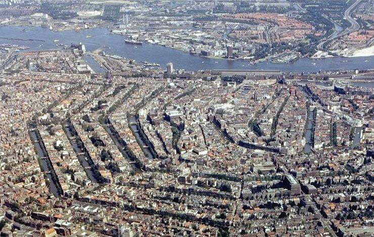
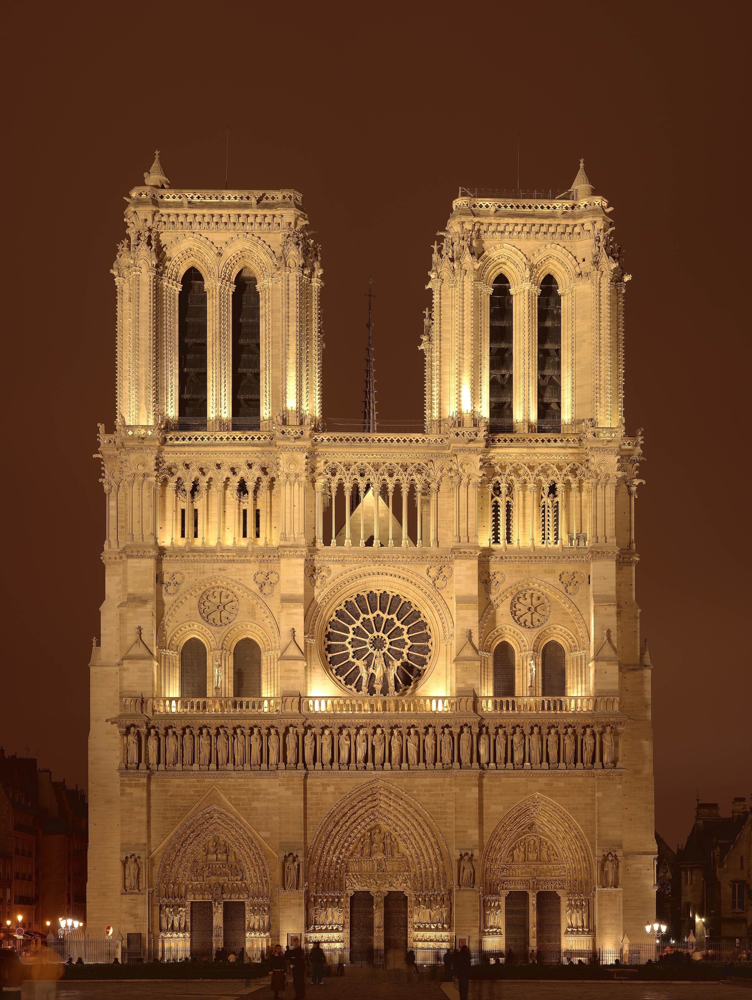
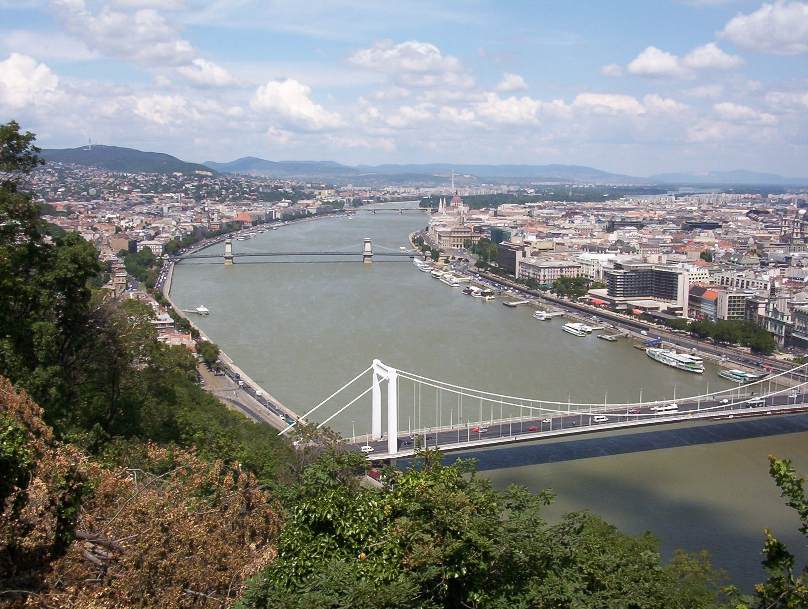

Barcelona
Barcelona is de 2de stad van Spanje, en hoofdstad van Catalunya. Met meer dan 2 miljoen bewoners is het een grote stad op Europees niveau. Ontstaan voor Christus en ontwikkeld onder de romeinen, is het ook een hele oude stad. Architectonisch is het na mijn mening een van de meest unieke steden in de wereld door de variatie van stijlen, gecombineerd met de verschillende terreinen. Barcelona is bekend door de gebouwen van Gaudi; zoals de Sagrada Familia, de casa Batllo, de casa Mila en parc Guell onder anderen.

Amsterdam
Amsterdam is de hoofdstad van Nederland. Bekend door de musea, kerken, grachten en hun unieke stijl van architectuur. Tussen de beroemde gebouwen hebben we het Rijksmuseum, het Stedelijks museum, de Westekerk, het Dam paleis en de oude kerk onder vele anderen.
Parijs
Parijs is een van de grootste steden van Europa en de hoofdstad van Frankrijk. De stad heeft een rijke geschiedenis die terug gaat naar de Romeinse tijd. Ook interessante architectuur vindbaar in Parijs met de weide boulevards, mooie paleizen, kerken en andere unieke gebouwen. Tussen de bekende gebouwen die er staan heb je de Eiffel toren, het museum van Louvre, de NotreDam, Montmartre en de Arc van Triompf onder vele meer.
Budapest
Budapest is de hoofdstad van Hongarije en een interessante stad met een unieke achtergrond. De stad was vroeger gedeeld tussen de westelijke kant "Buda", en de oostelijke kant "Pest" die gescheiden waren door de rivier Donau. Later kwamen de twee kanten samen toen er de eerste brug werd gebouwd. Budapest heeft in zijn architectuur veel invloed van Oostenrijk, maar ook van de oude Sovjet-Unie. Daardoor heeft het een speciale combinatie van stijlen. Belangrijke gebouwen zoals het parlement van Hongarije, de Vissersbastion of een van de prachtige bruggen die de rivier doorsteken.
New York
New York is een architectonisch fenomeen in onze wereld. Het is een van de grootste steden op aarde. Ontstaan als Nieuw-Amsterdam toen het bij de Nederlanders hoorde, is het gegroeid tot een metropolis van meer dan 10 miljoen inwoners. Het is bekend door de wijk van Manhattan, wat een eiland is in het midden van de stad die ook het meest bevolkte gedeelte is. Manhattan is special door de hoeveelheid wolkenkrabbers die daar allemaal dicht bij elkaar staan. Bekende gebouwen zijn de Empire State building, de Chrysler building, de World Trade Center en de MOMA onder anderen.